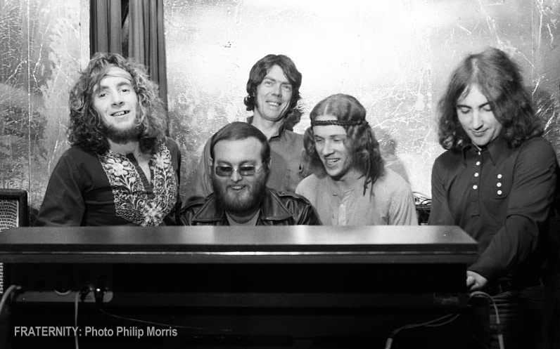

home > news > Fecha Posteo: 09 de enero de 2021 - Se Han Encontrado Pistas De Lost Fraternity Con Bon Scott
Se Han Encontrado Pistas De Lost Fraternity Con Bon Scott
09 Enero 2021
El historiador y promotor musical de Adelaide Victor Marshall ha sido anunciado como el 'Indiana Jones' de la música australiana después de descubrir el 'santo grial' de las grabaciones perdidas, la bóveda de Hamish Henry de grabaciones australianas ahora históricas, incluidas las pistas perdidas de Fraternity con el cantante de AC / DC Bon Scott. Marshall ha trabajado junto a los miembros supervivientes de Fraternity y su manager Hamish Henry para armar las grabaciones completas remasterizadas de la banda. Los álbumes originales de Fraternity (Livestock y Flaming Galah) y los singles se han remasterizado a partir de las cintas originales de Hamish Henry junto con un álbum completo de nuevas canciones inéditas con el entonces futuro cantante principal de AC / DC, Bon Scott. El nuevo álbum se llama "Second Chance" y recibe su nombre de la canción principal.
La caja será lanzada por Cherry Red Records en todo el mundo el 22 de enero de 2021. Space Lab 9 también lanzará cada álbum en una edición especial de vinilo doble limitado más adelante en 2021.
Victor Marshall hizo el sorprendente descubrimiento de grabaciones perdidas mientras realizaba entrevistas para la próxima biografía de la Fraternidad que ha escrito. Al rastrear a cada miembro sobreviviente de la banda y su séquito de sus días en Fraternity, Marshall pudo escribir de manera forense la historia de la banda utilizando los propios relatos y perspectivas de la banda. El libro de la Fraternidad será publicado por Brolga Publishing. El libro y la caja del CD se lanzarán en la celebración del 50 aniversario de Fraternity el jueves 18 de marzo en Thebarton Theatre. (Más información a continuación)
Victor Marshall: “Ha sido un sueño hecho realidad trabajar con una de las bandas de pub rock pioneras más importantes de Australia. Este proyecto no hubiera sido posible sin la generosidad de la banda (Bruce Howe, John Freeman, John Bisset, Sam See, Mauri Berg, Uncle John Eyers y Tony Buettel) y el manager original de la banda, Hamish Henry. Espero que todos los miembros de la Fraternidad finalmente reciban el reconocimiento que merecen y se les cuente su verdadera historia ”.
Hamish Henry
Hamish Henry dirigió la mayoría de los lugares y bandas de Adelaide a finales de los 60 y principios de los 70 desde sus oficinas en Le Fevre Terrace, Adelaide. Hamish y sus negocios, incluidos Grape Organisation, Music Power y Caine Promotions, dirigieron los mejores lugares como Headquarters Central (95 Grote Street), North (The Octogon Theatre Elizabeth), West, Snoopy's, The Scene, St Claire y Summer Sound Off (Memorial Drive ). Hamish llevó actos internacionales a Adelaide promocionando artistas como 1910 Fruitgum Co., Jerry Lee Lewis, Deep Purple, Free y Manfred Mann. Finalmente, Hamish financió y organizó el Festival de Música Myponga de 1971 en el que tuvo el titular de Black Sabbath con Fraternity y Billy Thorpe. Hamish pasó a financiar y organizar la Meadows Technicolor Fair en 1972. También dirigió otras bandas de Adelaide como Lotus, War Machine, Nostra Damus y Headband. Entre las otras actividades de Hamish en este momento se incluye la gestión exitosa de North Adelaide Galleries.
Después de dejar Adelaide y mudarse de Fraternity a Inglaterra, Hamish pasó a gestionar actos internacionales como The Pink Fairies, Focus y Charles Aznavour.
Fraternidad
Fraternity saltó rápidamente a la fama después de formarse en 1970 y se convirtió en la principal banda principal de Hamish. Dirigido por el bajista Bruce Howe, un duro maestro de tareas, junto con el experimentado guitarrista Mick Jurd, el grupo era conocido por la calidad de sus interpretaciones y su material original. Otros miembros incluyeron al maestro de las barras de tiro del órgano Hammond John Bisset, el mejor pie derecho en el negocio John Freeman a la batería, el extraordinario evasivo armónico tío John Eyers, el multiinstrumentista y compositor Sam See y, por supuesto, Bon Scott.
Algunos de los grandes logros de la banda fueron:
Ganar la Batalla de los sonidos de Hoadley en 1971 (derrotando a Sherbet y Jeff St John)
Representando al Country Arts Council en la gira regional más grande de SA
Actuando con la Orquesta Sinfónica de Melbourne en el Adelaide Festival of Arts
La primera banda de rock australiana en tener un especial de televisión dedicado en horario de máxima audiencia.
Actuando con bandas como Black Sabbath, Status Quo, Free y Manfred Mann
La celebración del 50 aniversario se llevará a cabo en Thebarton Theatre
El jueves 18 de marzo.
La fraternidad se celebrará junto con Hamish Henry's
1971 Festival de Música de Myponga.
Se llevará a cabo una preventa a partir de las 9 am ACDT del jueves 7 de enero de 2021
Entradas a la venta para el público en general 10am ACDT Viernes 8 de enero de 2021
Fraternidad - Celebración del 50 aniversario
Jueves 18 de marzo de 2021
Hace 50 años, Adelaide fue el hogar de la banda de rock número uno de Australia, FRATERNITY
Para celebrar el 50 aniversario de Fraternity, se ha remasterizado todo el catálogo anterior de Fraternity a partir de las cintas originales de Hamish Henry, incluido un tercer álbum nunca antes escuchado de canciones inéditas titulado "Second Chance". La caja Fraternity se complementa con notas de 18.000 palabras preparadas por Victor Marshall. La biografía oficial de la banda escrita por Victor Marshall también se lanzará en este evento.
Otro de los logros de Fraternity fue actuar en el Festival de Música de Myponga de 1971, organizado por su manager Hamish Henry y la Organización Grape. Se llevará a cabo un evento único en la vida en Thebarton Theatre que incluirá bandas originales del Festival de Música Myponga de 1971 como Mike Rudd's Spectrum, Matt Taylor's Chain, Doug Parkinson y más por anunciar.
¡Una noche interminable de éxitos como "Seasons of Change", "I'll Be Gone", "I Remember When I Was Young", "Dear Prudence" y muchos más!
Se ha reunido una banda especial con Vince Contarino (Zep Boys) al frente para interpretar las canciones de Fraternity en vivo por primera vez en casi 50 años. Las imágenes perdidas de Myponga 1971 de Hamish Henry se estrenarán esa noche junto con las fotos perdidas y las imágenes de Fraternity.
La fraternidad siempre estará asociada con su cantante principal, Bon Scott, quien más tarde se uniría a AC / DC y disfrutaría de la fama mundial. Bruce Howe, Mick Jurd, John Freeman, John Bisset, Sam See, el tío John Eyers y Tony Buettel han dejado su huella en la música australiana y esta noche es para celebrar su trabajo.
Entradas de Ticketmaster
www.grapeorganisation.com
www.fraternityofficial.com
Fuente: Organización de la uva

Archivo
09 julio 2021: Lanzamiento Del Sitio Web Oficial De Bon Scott
03 mayo de 2021: Brian Johnson Actúa Con Foo Fighters En El Evento VaxLive
12 de abril de 2021: Brian Johnson Publicará La Autobiografía "The Lives Of Brian" El 26 De Octubre
07 de abril de 2021: Disco De Imágenes De AC / DC Para El Día De La Tienda De Discos 12 De Junio
07 de abril de 2021: Entrevista Recién Descubierta Con Bon Scott De 1976
09 de enero de 2021: Se Han Encontrado Pistas De Lost Fraternity Con Bon Scott
23 de noviembre de 2020: "Power Up" En El N. ° 1 En 20 Países
07 de octubre 2020: Nuevo Álbum De AC / DC "PWR / UP" A La Venta El 13 De Noviembre
05 de octubre 2020: Nuevo Single "Shot In The Dark" A La Venta El Miércoles
30 de septiembre de 2020: AC / DC Confirma Nueva Alineación
10 de diciembre de 2019: Certificado "Back In Black" 25 Veces Platino En EE. UU.
--sin noticias--
28 de noviembre de 2017: Malcolm Young Se Despidió En Sydney St Mary’s Cathedral